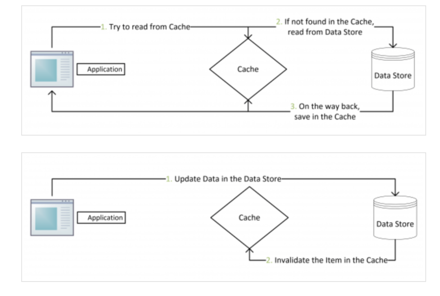

In Memory Stores
In-memory caches such as Memcached and Redis are key-value stores between your application and your data storage. Since the data is held in RAM, it is much faster than typical databases where data is stored on disk
Redis
REmote DIctionary Server = Redis
Reids is an open source, in-memory, NoSQL key/value store that is used primarily as an application cache or quick-response database.
Because it stores data in memory, rather than on a disk or solid-state drive (SSD), it’s very reliable and highly performant.
When an application relies on external data sources, the latency and throughput of those sources can create a performance bottleneck, especially as traffic increases or the application scales.
Redis stores all data in-memory—delivering the fastest possible performance when reading or writing data—and offers built-in replication capabilities that let you place data physically closer to the user for the lowest latency.
Unlike NoSQL databases such as MongoDB and PostgreSQL, Redis stores data in the server’s main memory rather than on hard disks and solid-state drives.
Redis Cluster
Redis Cluster (link resides outside IBM) is a distributed implementation of Redis that automatically splits datasets among multiple nodes.
This supports higher performance and scalability of database deployments, while ensuring continuous operations in the event that node subsets are unable to communicate with the rest of the cluster.
Redis Search
Query Engine and Full-Text Search over Redis
RediSearch has a distributed cluster version that scales to billions of documents, and hundreds of servers. Supports: Full-Text indexing of multiple fields in documents. RediSearch comes with a few very basic scoring functions to evaluate document relevance like
TFIDF.
TFIDF Scoring:
Basic TF-IDF scoring with a few extra features thrown inside:
For each term in each result, we calculate the TF-IDF score of that term to that document. Frequencies are weighted based on field weights that are pre-determined, and each term’s frequency is normalized by the highest term frequency in each document.
We multiply the total TF-IDF for the query term by the a priory document score given on FT.ADD.
We give a penalty to each result based on “slop” or cumulative distance between the search terms: exact matches will get no penalty, but matches where the search terms are distant see their score reduced significantly.
For each 2-gram of consecutive terms, we find the minimal distance between them.
The penalty is the square root of the sum of the distances, squared - 1/sqrt(d(t2-t1)^2 + d(t3-t2)^2 + …).
Cache
Idea: “recently requested data is likely to be requested again”
A cache is like short-term memory: it has a limited amount of space, but is typically faster than the original data source and contains the most recently accessed items.
Caches can exist at all levels in architecture, but are often found at the level nearest to the front end, where they are implemented to return data quickly without taxing downstream levels.
Placing a cache directly on a request layer node enables the local storage of response data.
Each time a request is made to the service, the node will quickly return locally cached data if it exists.
Advantages
Reduce Network Calls
Cached data stores like Redis stores Key/Value pairs.
Avoid Re-Calculations
Example: an application makes a request to find the average age of the users.
You would have to go to the database, search all in the records and compute the average each time! Very Expensive!
You could compute it once and save it as a key/value pair.
Avoid Loads on the Database
If you have a lot of servers trying to get data from the database, could put a heavy load on the database and slow performance
Could keep some data in cache to help on this.
Disadvantages
Can be expensive (hardware = SSD)
Need to maintain consistency between caches and the source of truth such as the database through cache invalidation.
Cache invalidation is a difficult problem, there is additional complexity associated with when to update the cache.
Need to make application changes such as adding
Redisormemcached.Cache & Database Sync
Read Through
For immutable operations (read):
Client will always simply read from cache.
Either cache hit or cache miss is transparent to the client. If it is a cache miss, the cache should have the ability to automatically fetch from the database.
For mutable operations (create, update, delete):
This strategy does not handle mutable operations.
It should be combined with write through (or write behind) pattern.
Drawback:
Many cache layers may not support it. For example, Redis would not be able to fetch from
MySQL automatically (unless you write a plugin for Redis).
Write Through
For immutable operations (read):
This strategy does not handle immutable operations. It should be combined with read through pattern.
For mutable operations (create, update, delete):
The client only needs to create, update or delete the entry in Redis. The cache layer has to atomically synchronize this change to MySQL.
Drawback
First, many cache layers would not natively support this.
Second, Redis is a cache rather than an RDBMS. It is not designed to be resilient. Thus, changes may be lost before they are replicated to MySQL.
Even if Redis has now supported persistence techniques such as RDB and AOF, this approach is still not recommended.
